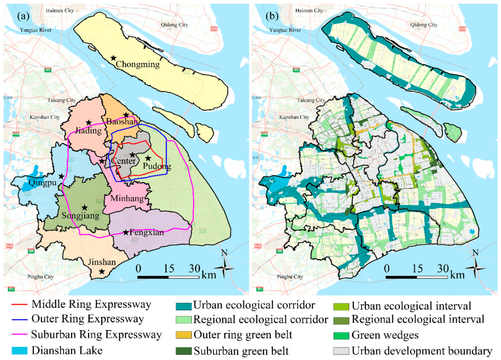
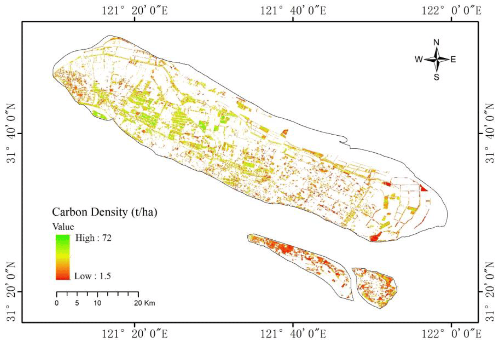

4 week4-Policy applications
4.1 Summary: Issues and policies
4.1.1 Global issues
Carbon dioxide, one of the main causes of global climate change, is emitted mainly in urban areas. Urban areas account for more than 70 per cent of global CO2 emissions. According to Ribeiro et al. (Ribeiro, Rybski & Kropp 2019), the magnitude of carbon dioxide emissions is affected by population density in direct proportion to the size of the city.
4.1.2 Study Area Context - Shanghai
In China, with rapid industrialisation, different cities are under pressure to address climate change. Shanghai is a typical cosmopolitan city, with population densities of more than 300 people/ha in Huangpu, Jing’an and Hongkou districts in 2018, while Putuo and Yangpu districts have population densities between 200-300 people/ha. Its status as the most industrialised and affluent city in China is also the most polluted (Li et al. 2017).

As a C40 city, Shanghai should actively follow the Paris Agreement’s 1.5˚C target to reduce greenhouse gas emissions and climate risks in the context of economic growth. Although Shanghai is missing from the C40 Cities Climate Leadership Group’s city climate change plan statistics (C40 Cities Climate Leadership Group & C40 Knowledge Hub 2022). However, the region also has local policies that actively address climate change, for example in the area of carbon emissions.
4.1.3 Policy summary
China is currently leading the current global trend in carbon emissions along with other developing countries, setting a goal of achieving carbon neutrality by 2060 (The State Council of the People’s Republic of China 2021).
Shanghai, as the first Chinese city to enter the post-industrialisation phase, is striving to meet China’s energy intensity and pollution reduction targets, and regulations have been enacted at the city level, such as reducing energy consumption per unit of gross domestic product (GDP) by 14 per cent by 2025 compared to 2020, and striving to reach a 20 per cent share of non-fossil energy in total energy consumption. Conducting estimation and management of natural carbon stocks is one of its main tasks (Shanghai Municipal Government 2022).
| No. | Policy name | Aims |
|---|---|---|
| 1 | The Paris Agreement | The Goal of limiting global warming to 1.5°C |
| 2 | C40 Leadership Standards | Contribute to halving overall emissions in C40 cities by 2030; mainstream their equitable climate goals into the decision-making processes of the most influential cities |
| 3 | China Plan for Carbon Dioxide Peak | Peak and steady decline in carbon dioxide emissions by 2030, and successful achievement of the carbon neutrality target by 2060 |
| 4 | Shanghai Carbon Peaking Action Plan | By 2030, non-fossil energy sources will strive to account for 25 per cent of total energy consumption, and carbon dioxide emissions per unit of gross domestic product (GDP) will be reduced by 70 per cent compared with 2005, ensuring that carbon peaks by 2030 |
4.2 Applications: Addressing policy challenges with data
4.2.1 Calculation of carbon emissions
Carbon emissions in cities come from a variety of sources, and different levels of carbon emissions can be portrayed with different remote sensing tools. For example, the total nighttime light intensity value has a good correlation with carbon emissions. Zhang et al. (Zhang et al., 2024) calculated the carbon emissions in China by using the long-series nighttime light dataset based on the calibration and fusion of the DMSP/OLS annual monthly image data and the NPP/VIIRS monthly image data in conjunction with the total nighttime light value, simulation coefficients, and the simulation intercepts of the study area.
.png)
Based on FROM-GLC10, the world’s first 10 m resolution global surface coverage product, Ji et al. (Ji et al., 2023) constructed partial least squares regression, random forest, and geo-detection models using factors affecting building emissions, and investigated the effects of building compactness on carbon emissions from building energy consumption at different buffer distances in 59 cities in China.
4.2.2 Calculation of carbon sinks
The breakdown types in the field of carbon storage and emission are also classified into forest carbon, building carbon, transport carbon, industrial carbon, etc. based on the source. Zhang et al. (Zhang et al., 2023) downloaded Sentinel-2 images of forest cover during the growing season with cloud cover less than 4% as a benchmark, selected 4 spectral reflectance indices and 15 vegetation indices that are significantly related to forest carbon density as candidate indicators for carbon stock estimation, and used a combination of manual visual interpretation and field survey based on aerial photographs taken by the Survey and Mapping Institute to detect sinks in Chongming Island forest. The forests of Chongming Island were detected by a combination of manual visual interpretation and field survey based on aerial photographs of the Institute of Survey and Mapping.

Although the industrial structure of Shanghai is improving, it is still under pressure to reduce carbon emissions and energy consumption, so using remote sensing images to track its carbon emissions and other related activities is of great significance and more objective at the same time. Meanwhile, most of the studies are limited to energy emission or a single aspect, and there is a lack of research that systematically aggregates carbon emission related factors such as buildings, population, and industry, which is a direction that future studies can try. For future research, I would like to continue to explore the application of remote sensing to carbon sinks, which are becoming more and more important due to the decline of forests and grasslands in China.
4.4 References
C40 Cities Climate Leadership Group & C40 Knowledge Hub, 2022. C40 Cities with a Paris Climate Agreement compatible CAP [Online]. https://www.google.com/maps/d/viewer?mid=1hR77I4BWAhKAb805TrazOV__2DBsxUZ7.
Ji, R. et al., 2023. Green Space Compactness and Configuration to Reduce Carbon Emissions from Energy Use in Buildings, Remote Sensing. Multidisciplinary Digital Publishing Institute, årg. 15, nr. 6, s. 1502.
Li, Z. et al., 2017. Towards low carbon based economic development: Shanghai as a C40 city, Science of The Total Environment, årg. 576, s. 538–548.
Ribeiro, H.V., Rybski, D. & Kropp, J.P., 2019. Effects of changing population or density on urban carbon dioxide emissions, Nature Communications. Nature Publishing Group, årg. 10, nr. 1, s. 3204.
Shanghai Municipal Government, 2022. Shanghai Carbon Peaking Action Plan. Shanghai, China.
The State Council of the People's Republic of China, 2021. China Rolls Out Plan for Carbon Dioxide Peak [Online].
https://english.www.gov.cn/policies/latestreleases/202110/26/content_WS6178023cc6d0df57f98e3d5c.html.
Zhang, C. et al., 2023. Estimating the Forest Carbon Storage of Chongming Eco-Island, China, Using Multisource Remotely Sensed Data, Remote Sensing. Multidisciplinary Digital Publishing Institute, årg. 15, nr. 6, s. 1575.
Zhang, Z. et al., 2024. Spatiotemporal Analysis and Prediction of Carbon Emissions from Energy Consumption in China through Nighttime Light Remote Sensing, Remote Sensing. Multidisciplinary Digital Publishing Institute, årg. 16, nr. 1, s. 23.